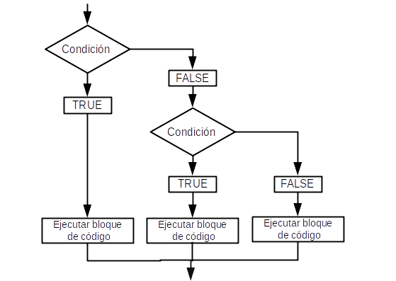

if...else & ifelse
La estructura de control if...else se utiliza para evaluar una expresión condicional: si se cumple la condición (TRUE), ejecutará un bloque de código. Si no se cumple (FALSE), es posible ejecutar otras sentencias.
if (condición) {
cuerpo (bloque de código)
}
## Si 4 es menor a 7 multipliccar 4 x 2
if (4 < 7) { ## condicion verdadera
4 * 2 ## ejecutar la multiplicacion
}
## Si 7 es menor a 4 multipliccar 7 x 2
if (7 < 4) { ## condicion falsa
7 * 2 ## no se ejecutara la multiplicacion
}
Si queremos que ejecute un bloque de código cuando no se cumple la condición (FALSE), se utiliza la sentencia else.
if (condición) {
cuerpo1 (bloque de código 1)
} else {
cuerpo2 (bloque de código 2)
}
Es importante tener en cuenta que else debe estar en la misma línea que las llaves de cierre de la instrucción if.
## Crear un df con dos columnas, una para organismo y otra para saber que tipo es
df <- data.frame(orga = c("cactus", "helecho", "raton", "gato", "palma", "perro"),
tipo = c("planta", "planta", "animal", "animal", "planta", "animal"))
## Saber si cactus es una planta o un animal
if (df[1, 2] == "planta") { ## si la condicion es verdadera
print(paste(df[1, 1], "es una planta")) ## Es una planta
} else { ## si la condicion es falsa
print(paste(df[1, 1], "es una animal")) ## Es una animal
}
## Saber si perro es una planta o un animal
if (df[6, 2] == "planta") { ## si la condicion es verdadera
print(paste(df[6, 1], "es una planta")) ## Es una planta
} else { ## si la condicion es falsa
print(paste(df[6, 1], "es una animal")) ## Es una animal
}
Si queremos agregar múltiples condiciones en una sola linea, entonces usando la declaración if, else if y else podemos agregar fácilmente múltiples condiciones. En la instrucción solo se agrega un if al principio, puede haber múltiples else if y se termina con un else.
Si queremos que ejecute un bloque de código cuando no se cumple la condición (FALSE), se utiliza la sentencia else.
if (condición1) {
cuerpo1 (bloque de código 1)
} else if (condición2) {
cuerpo2 (bloque de código 2)
} else {
cuerpo3 (bloque de código 3)
}

## Crear un df con dos columnas, una para organismo y otra para saber que tipo es
df <- data.frame(orga = c("cactus", "helecho", "raton", "gato", "palma", "perro", "amanita"),
tipo = c("planta", "planta", "animal", "animal", "planta", "animal", "hongo"))
## Saber si amanita es un hongo, una planta o un animal
if (df[7, 2] == "planta") { ## si la condicion es verdadera
print(paste(df[7, 1], "es una planta")) ## Es una planta
} else if (df[7, 2] == "animal") { ## si la condicion es falsa
print(paste(df[7, 1], "es una animal")) ## Es una animal
} else { ## si la condicion es falsa
print(paste(df[7, 1], "es una hongo")) ## Es una animal
}
Para evaluar una expresión condicional a cada elemento de un vector se utiliza la función ifelse(). En donde la condición debe contener un vector lógico (o un objeto que se pueda convertir en lógico). El valor de retorno es un vector con la misma longitud que la condición.
ifelse(condición, x, y)
Si los elementos del vector cumplen con la condición (TRUE), entonces se aplicará x, si no lo cumple (FALSE) entonces era y.
## Crear un vector numerico
df_dos <- data.frame(num = c(10, 7, 2, 5, 8, 3, 2, 9))
## Verificar si cada elemento de la columna num es par o impar
## y guardar el resultado en una nueva columna
df_dos$resultado <- ifelse(df_dos$num %% 2 == 0, "par", "impar")
## Crear un df con dos columnas, una para organismo y otra para saber que tipo es
df <- data.frame(orga = c("cactus", "helecho", "raton", "gato", "palma", "perro", "amanita"),
tipo = c("planta", "planta", "animal", "animal", "planta", "animal", "hongo"))
## Verificar que tipo de organismo es cada elemnto de la columna orga
## si es planta sera igual a 1, si es animal igual a 2 y si es hongo igual a 3
## guardar los resultados en una nueva columna
df$resultado <- ifelse(df$tipo == "planta", 1,
ifelse(df$tipo == "animal", 2, 3))